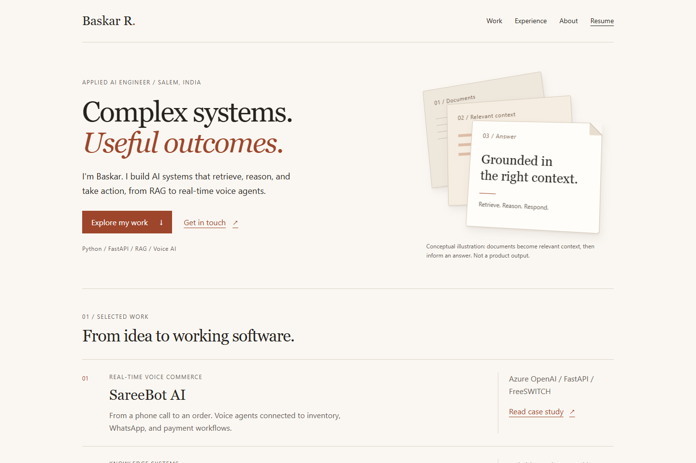
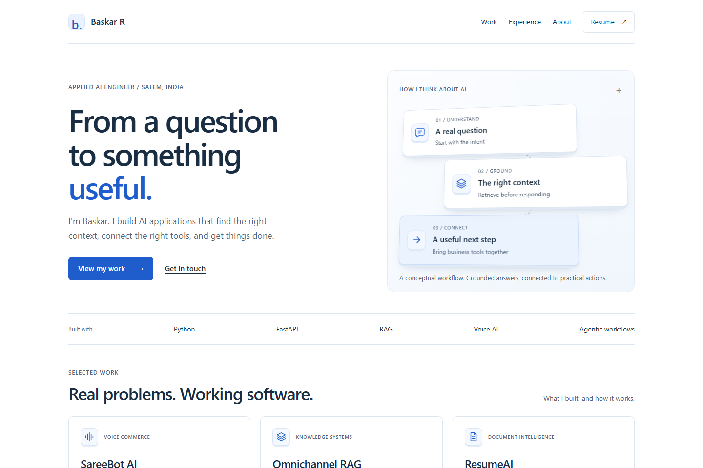
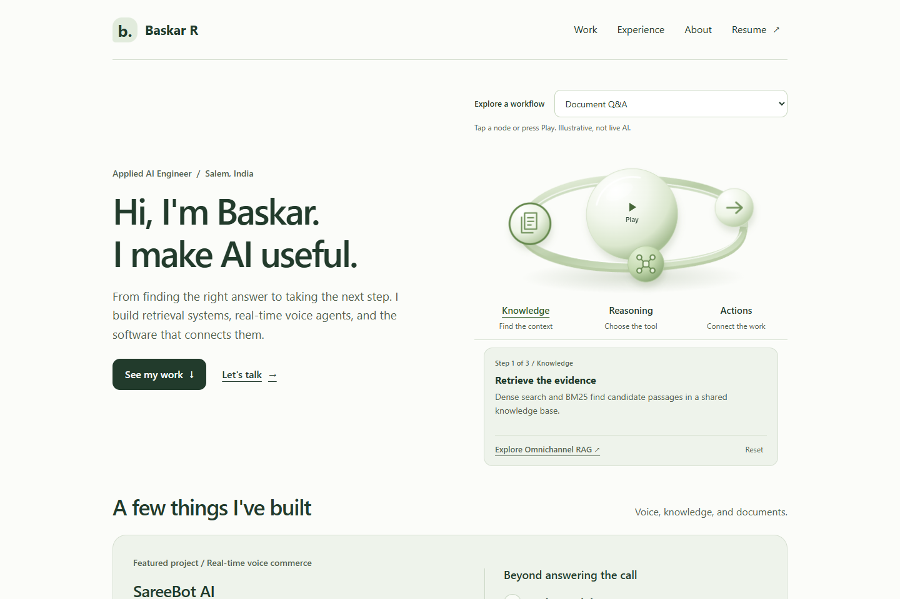

01 / PaperWarm & thoughtful

Like a well-made page.
Warm white, readable serif headings, and a tactile paper stack. Simple project rows keep the focus on what you built.
- Quiet typography
- 3D document layers
- Compact project rows
Three new options / A simpler direction
Less decoration. More room to read. Three light, approachable designs with 3D used only to help explain the work.
Paper / Flow / Sage
New explorations.

Warm white, readable serif headings, and a tactile paper stack. Simple project rows keep the focus on what you built.

White space, clear blue accents, and a small connected workflow. A straightforward way to understand your engineering at a glance.

A personal introduction, soft green surfaces, and sculptural AI building blocks. Now extended to the individual project pages.
Each option is a full homepage with your projects, experience, skills, and contact details. Text stays still. Only the small hero illustration responds to the mouse, with motion disabled for touch and reduced-motion preferences.
Sage is the selected local homepage, with matching project pages and resume styling. Publishing still requires a push to GitHub. The earlier designs are kept separately.